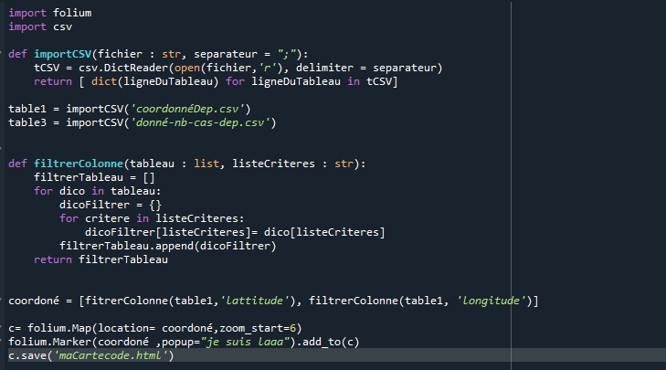
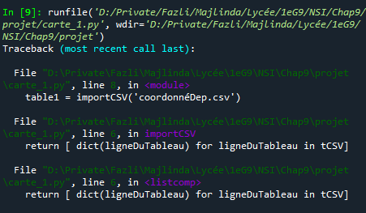
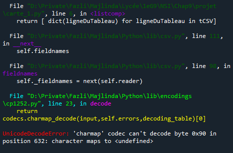
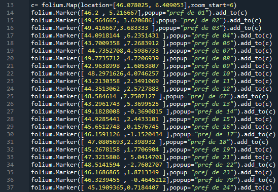
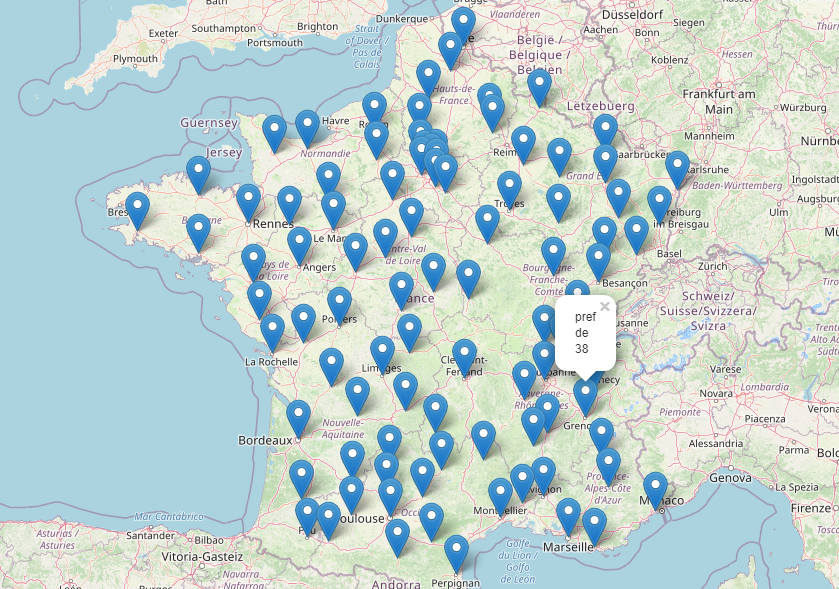

Ce projet consiste a ajouter une Application dans ce site.On doit coder en python, en HTML, en CSS et utiliser des tables CSV.Cette application est basée sur un carte géographique, qui doit être réaliser par nous même et il faut y faire apparaître des pop-ups.Les pop-ups sont des petits onglets qui apparaissent quand on appuie dans un bouton.
Alors moi mon application ce concentre sur la France, plus précisement sur ses départements.Elle étudie combien de cas positive du COVID-19 ont été repéré dans chaque départements.Il suffie de cliqué sur les points (marqueur)de chaque préfecture de chaque départements.Puis quand on clique sur points, on peut voir s'afficher un pop-up où il y a un graphique qui dit : depuis le 11/04/2020 au 04/05/2020 il y a eu 'n' cas positive (en tout depuis la premiere date). Pour trouver mes données, sur le nombre de cas de COVID-19, je suis aller chercher sur "data.gouv.fr" et pour les coordoné GPS, je suis aller surle même ite mais il n'y avait du coup je suis allé sur Wikipedia il y avait le coordonnés de chaque préfectures.
Ducoup mes Questions sont:
Tout d'abord, il faut trouver ses questions puis chercher les données! Trés important!Quand on a nos questions et nos données, la on va commncé a programmer. Moi perso j'ai commencé par réaliser ma carte.Le plus pratique, c'est d'utiliser Folium! Moi je me suis aider en regardant sur un site (francais) pour créer ma carte (c'etait simple).Puis, je commancer à créer un code qui pourrai lire une table CSV où il y a les coordonnés GPS de chaque préfecture.(voir le code ci dessous).
  J'ai bcp chercher a comprendre ce qui n'allait pas avec mon programme, j'y ai perdu beaucoup de temps.Du coup j'ai décidé de le tapé à la main.Voir image ci dessous (je n'ai pu tout prendre en photo)
 Voici le résultat
Il me reste l'étape des graphique dans les pop-ups et pour ca je me suis aidé du tutoriel de mon professeur de NSI, M.Bouillot.Mais le problème est que vu que j'ai des problemes avec mes fichiers CSV, j'ai du tout taper à la main et j'ai remarquer que c'etait beaucoup trop long ( + de 1400 lignes de code ), j'ai décidé de faire la moitié des départements.
Je vous commente une partie du code pour faire les pop-ups avec des graphique. Alors je vais commencé par commenter la ligne 1477, ici on crée le points, on mets les coordonnés GPS, puis on dit que le pop-up doit contenir un graphique de variable "chart".Puis en haut on définit la variable " chart" qui décrit comment va se présenter le graphique.Dans "values", on entre les données qui vont servir pour l'abscisse et l'ordonnés.Dans la ligne 1470 on dit que le graphique sera en "bar", c'est à dire en histogramme.Et dans les lignes 1471 et 1472 on dit quelle données va en abscisse et quelle données en ordonnés.Enfin dans la ligne 1481 on sauvegarde tout ca dans fichier HTML.